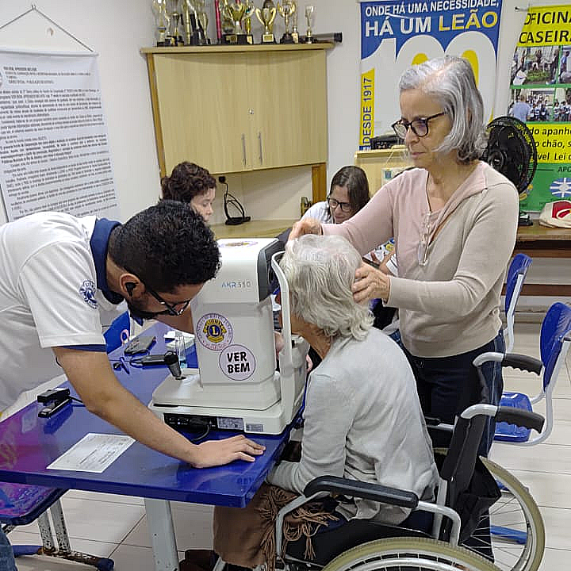
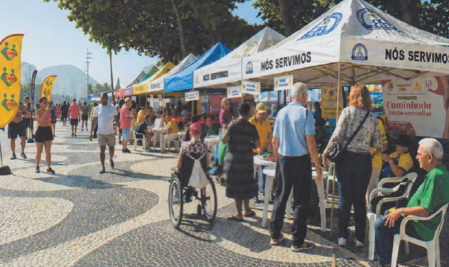
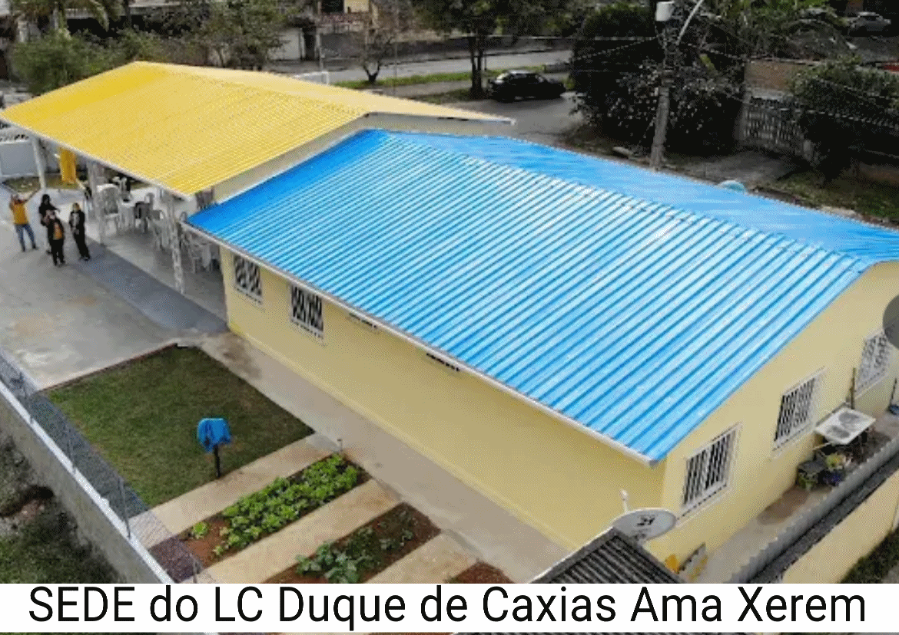

VisãoVer Bem e Aprender Melhor
Exames de acuidade visual e doação de óculos de grau para pessoas em situação de vulnerabilidade econômica, com a liderança do LC RJ Flamengo.
O Lions Clubs International direciona sua força de serviço voluntário mundial através de oito causas globais, mobilizando milhões de pessoas para enfrentar os desafios mais críticos da humanidade. Cada pilar representa um compromisso prático com o bem-estar e a transformação das comunidades.
"Nós Servimos"
Cada campanha do Distrito nasce alinhada a uma das causas globais, é isso que permite articular recursos internacionais para projetos aqui no Rio de Janeiro.

VisãoExames de acuidade visual e doação de óculos de grau para pessoas em situação de vulnerabilidade econômica, com a liderança do LC RJ Flamengo.

DiabetesRastreamento de diabetes, hipertensão arterial, obesidade, abuso do álcool e câncer de pele, todo último domingo do mês em Copacabana.

HumanitárioO Centro de Convivência para Pessoas com Deficiência de Xerém foi implantado com apoio de subsídios da Lions Clubs International Foundation.
Projetos alinhados às áreas de enfoque do Lions Internacional podem pleitear subsídios da LCIF. Veja o passo a passo completo do processo.